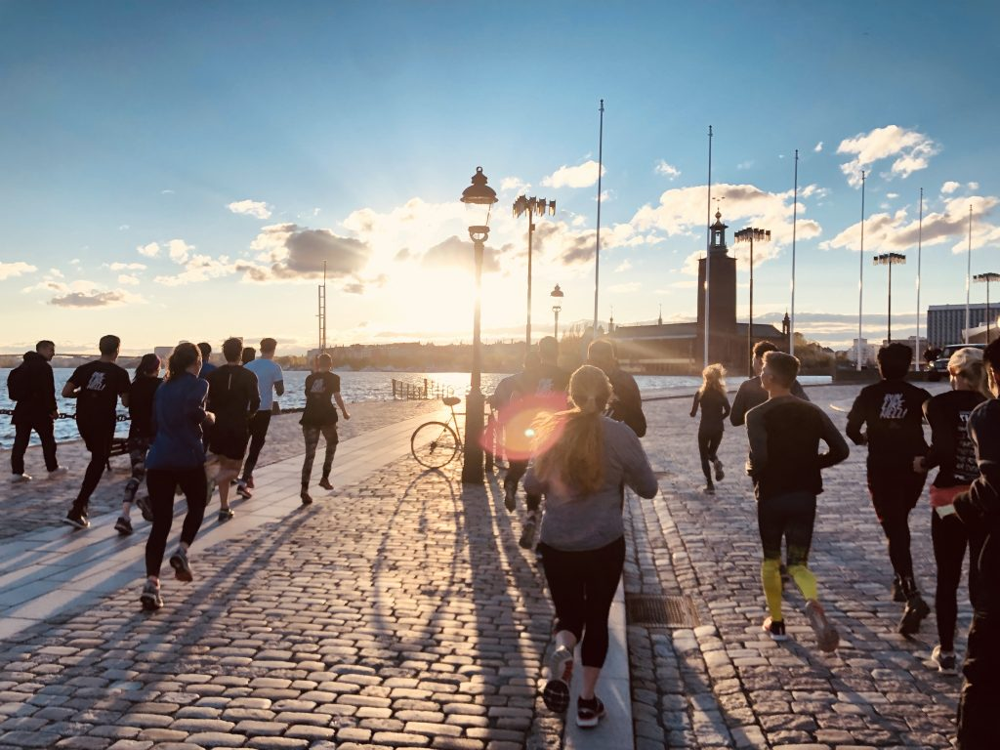
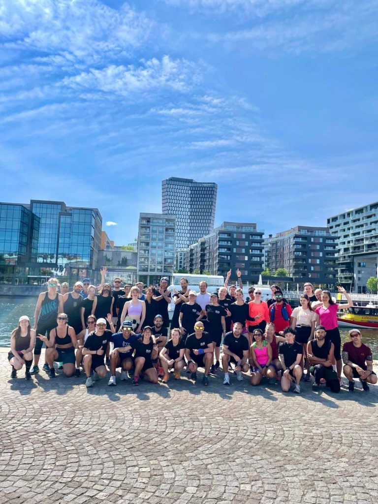
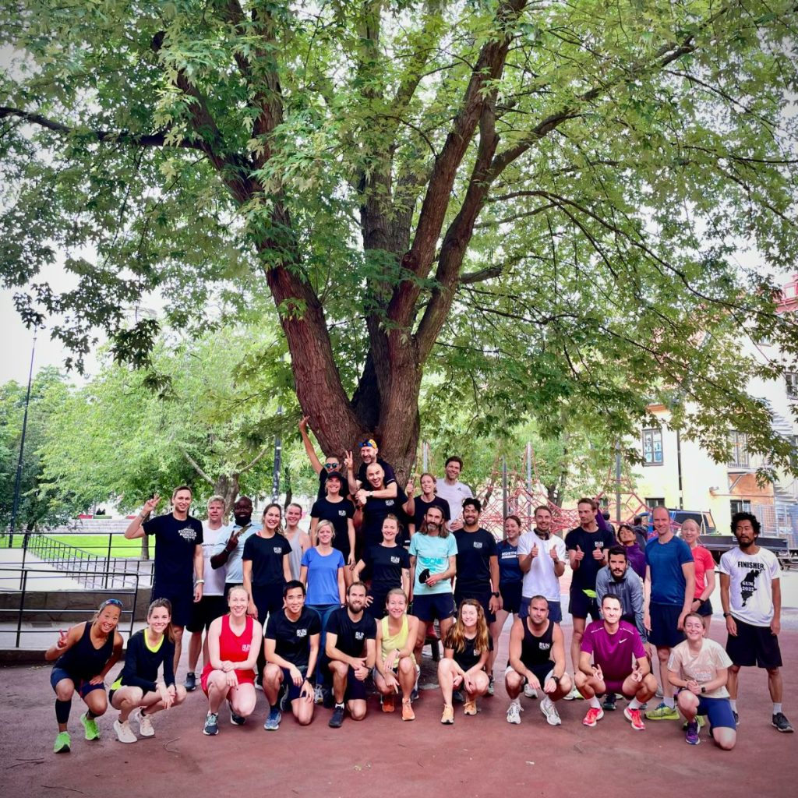

Run Collective Tuesday
Tuesdays 18:15
Enjoy a scenic group run through Stockholm followed by food and drinks in the charming neighborhoods of Gamla Stan.
| Group | Distance | Pace |
|---|---|---|
| 1 | 5–6 km | 6:00 /km |
| 2 | 8 km | 5:30 /km |
| 3 | 8–10 km | 5:00 /km |

Stockholm · since 2022
Free weekly runs through the city, three pace groups, and food, drinks and fika afterwards. No sign-up, no membership. Just turn up.
Next run
Run Collective Stockholm is an inclusive community founded in 2022 where every runner feels welcomed and valued. Our mission is to explore Stockholm and the rest of the world together, promoting respect, connection, and the joy of running, culminating in friendly social gatherings after each session.


Discover upcoming runs and social gatherings where every stride brings you closer to new friends and unforgettable moments in Stockholm.
Run Collective Tuesday
Tuesdays 18:15
Enjoy a scenic group run through Stockholm followed by food and drinks in the charming neighborhoods of Gamla Stan.
| Group | Distance | Pace |
|---|---|---|
| 1 | 5–6 km | 6:00 /km |
| 2 | 8 km | 5:30 /km |
| 3 | 8–10 km | 5:00 /km |
Social Saturday Run
Saturdays 10:15
Experience a relaxing long run followed by a cozy fika at our favorite bakery on Södermalm.
| Group | Distance | Pace |
|---|---|---|
| 1 | 8–9 km | 6:00 /km |
| 2 | 12–15 km | 5:30 /km |
| 3 | 12–15 km | 5:00 /km |
Drag to the pace you can hold comfortably while still holding a conversation. That is the pace that matters here — not your race pace.
Join us weekly to run through Stockholm's vibrant neighborhoods, ending each session with friendly social gatherings and refreshments.
Join the run club for inclusive runs with bag drop that welcome all levels.
Participate in our free weekly runs followed by social events featuring food and drinks.
Experience supportive group runs and connect with fellow runners in a respectful environment.
Everything you were going to ask before showing up.
No. There is no registration and no membership. Turn up at the meeting point a few minutes before the start time and say hello — someone will point you to the right group.
Yes. The runs are free to join. You only pay for whatever you order at the social afterwards, and you are welcome to skip that too.
There is a bag drop at both runs, so you can come straight from work or from home with a change of clothes.
Come anyway. Group 1 is the social group — the point is that nobody is dropped. If you are not sure, start in group 1 and move up another week once you know the route and the people.
Six minutes per kilometre is a conversational jog for most regular runners — around 36 minutes for 6 km. If you can talk while you run, you are in the right group. Use the group picker above if you would rather see it against your own pace.
No. Wear whatever you run in. In winter, bring a headlamp or reflective layer for the darker stretches along the water.
Tuesdays outside Bacchi Syre in Gamla Stan, Saturdays outside Biscuit Konditoriet on Södermalm. Both links open the exact pin in Maps.
Please do. Bring two.
The fastest way to reach us is a DM. We answer questions from first-timers every week — there is no such thing as a silly one.